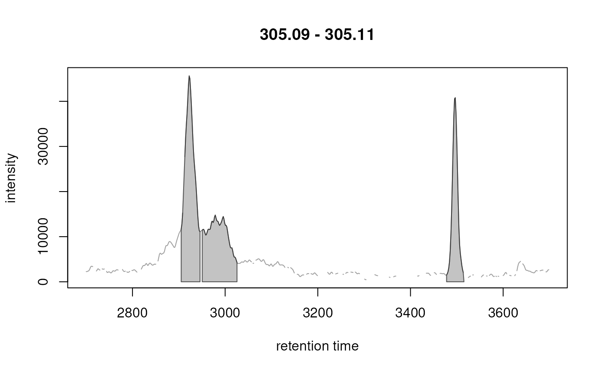

Refine Identified Chromatographic Peaks
Source:R/AllGenerics.R, R/XcmsExperiment.R, R/functions-Params.R, and 1 more
refineChromPeaks.RdThe refineChromPeaks method performs a post-processing of the
chromatographic peak detection step to eventually clean and improve the
results. The function can be applied to a XcmsExperiment() or XCMSnExp()
object after peak detection with findChromPeaks(). The type of peak
refinement and cleaning can be defined, along with all its settings, using
one of the following parameter objects:
CleanPeaksParam: remove chromatographic peaks with a retention time range larger than the provided maximal acceptable width (maxPeakwidth).FilterIntensityParam: remove chromatographic peaks with intensities below the specified threshold. By default (withnValues = 1) values in thechromPeaksmatrix are evaluated: all peaks with a value in the column defined with parametervaluethat are>=a threshold (defined with parameterthreshold) are retained. IfnValuesis larger than 1, the individual peak intensities from the raw MS files are evaluated: chromatographic peaks with at leastnValuesmass peaks>= thresholdare retained.MergeNeighboringPeaksParam: peak detection sometimes fails to identify a chromatographic peak correctly, especially for broad peaks and if the peak shape is irregular (mostly for HILIC data). In such cases several smaller peaks are reported. Also, peak detection with centWave can result in partially or completely overlapping peaks. This method aims to reduce such peak detection artifacts by merging chromatographic peaks that are overlapping or close in RT and m/z dimension (considering also the measured signal between them). See section Details for MergeNeighboringPeaksParam for details and a comprehensive description of the approach.
refineChromPeaks methods will always remove feature definitions, because
a call to this method can change or remove identified chromatographic peaks,
which may be part of features.
Usage
refineChromPeaks(object, param, ...)
# S4 method for class 'XcmsExperiment,CleanPeaksParam'
refineChromPeaks(object, param = CleanPeaksParam(), msLevel = 1L)
# S4 method for class 'XcmsExperiment,MergeNeighboringPeaksParam'
refineChromPeaks(
object,
param,
msLevel = 1L,
chunkSize = 2L,
BPPARAM = bpparam()
)
# S4 method for class 'XcmsExperiment,FilterIntensityParam'
refineChromPeaks(
object,
param,
msLevel = 1L,
chunkSize = 2L,
BPPARAM = bpparam()
)
CleanPeaksParam(maxPeakwidth = 10)
MergeNeighboringPeaksParam(
expandRt = 2,
expandMz = 0,
ppm = 10,
minProp = 0.75
)
FilterIntensityParam(threshold = 0, nValues = 1L, value = "maxo")
# S4 method for class 'XCMSnExp,CleanPeaksParam'
refineChromPeaks(object, param = CleanPeaksParam(), msLevel = 1L)
# S4 method for class 'XCMSnExp,MergeNeighboringPeaksParam'
refineChromPeaks(
object,
param = MergeNeighboringPeaksParam(),
msLevel = 1L,
BPPARAM = bpparam()
)
# S4 method for class 'XCMSnExp,FilterIntensityParam'
refineChromPeaks(
object,
param = FilterIntensityParam(),
msLevel = 1L,
BPPARAM = bpparam()
)Arguments
- object
XCMSnExp or XcmsExperiment object with identified chromatographic peaks.
- param
Object defining the refinement method and its settings.
- ...
ignored.
- msLevel
integerdefining for which MS level(s) the chromatographic peaks should be cleaned.- chunkSize
For
refineChromPeaksifobjectis either anXcmsExperiment:integer(1)defining the number of files (samples) that should be loaded into memory and processed at the same time. Peak refinement is then performed in parallel (per sample) on this subset data. This setting thus allows to balance between memory demand and speed (due to parallel processing). Because parallel processing can only performed on the subset of data currently loaded into memory in each iteration, the value forchunkSizeshould match the defined parallel setting setup. Using a parallel processing setup using 4 CPUs (separate processes) but usingchunkSize =1will not perform any parallel processing, as only the data from one sample is loaded in memory at a time. On the other hand, settingchunkSize` to the total number of samples in an experiment will load the full MS data into memory and will thus in most settings cause an out-of-memory error.- BPPARAM
parameter object to set up parallel processing. Uses the default parallel processing setup returned by
bpparam(). SeeBiocParallel::bpparam()for details and examples.- maxPeakwidth
For
CleanPeaksParam:numeric(1)defining the maximal allowed peak width (in retention time).- expandRt
For
MergeNeighboringPeaksParam:numeric(1)defining by how many seconds the retention time window is expanded on both sides to check for overlapping peaks.- expandMz
For
MergeNeighboringPeaksParam:numeric(1)constant value by which the m/z range of each chromatographic peak is expanded (on both sides!) to check for overlapping peaks.- ppm
For
MergeNeighboringPeaksParam:numeric(1)defining a m/z relative value (in parts per million) by which the m/z range of each chromatographic peak is expanded (on each side) to check for overlapping peaks.- minProp
For
MergeNeighboringPeaksParam:numeric(1)between0and1representing the proporion of intensity required for peaks to be joined. See description for more details. With default (minProp = 0.75) only peaks are joined if the signal half way between them is larger than 75% of the smallest of the two peak's"maxo"(maximal intensity at peak apex).- threshold
For
FilterIntensityParam:numeric(1)defining the threshold below which peaks are removed.- nValues
For
FilterIntensityParam:integer(1)defining the number of data points (for each chromatographic peak) that have to be>= threshold. Defaults tonValues = 1.- value
For
FilterIntensityParam:character(1)defining the name of the column inchromPeaksthat contains the values to be used for the filtering.
Value
XCMSnExp or XcmsExperiment object with the refined
chomatographic peaks.
Details for MergeNeighboringPeaksParam
For peak refinement using the MergeNeighboringPeaksParam, chromatographic
peaks are first expanded in m/z and retention time dimension (based on
parameters expandMz, ppm and expandRt) and subsequently grouped into
sets of merge candidates if they are (after expansion) overlapping in both
m/z and rt (within the same sample). Note that each peak gets
expanded by expandRt and expandMz, thus peaks differing by less than
2 * expandMz (or 2 * expandRt) will be evaluated for merging.
Peak merging is performed along the retention time axis, i.e., the peaks are
first ordered by their "rtmin" and merge candidates are defined iteratively
starting with the first peak.
Candidate peaks are merged if the
average intensity of the 3 data points in the middle position between them
(i.e., at half the distance between "rtmax" of the first and "rtmin" of
the second peak) is larger than a certain proportion (minProp) of the
smaller ("maxo") intensity of both peaks. In cases in which this calculated
mid point is not located between the apexes of the two peaks (e.g., if the
peaks are largely overlapping) the average signal intensity at half way
between the apexes is used instead. Candidate peaks are not merged if all 3
data points between them have NA intensities.
Merged peaks get the "mz", "rt", "sn" and "maxo" values from the
peak with the largest signal ("maxo") as well as its row in the metadata
of the peak (chromPeakData). The "rtmin" and "rtmax" of the merged
peaks are updated and "into" is recalculated based on all signal between
"rtmin" and "rtmax" and the newly defined "mzmin" and "mzmax" (which
is the range of "mzmin" and "mzmax" of the merged peaks after expanding
by expandMz and ppm). The reported "mzmin" and "mzmax" for the
merged peak represents the m/z range of all non-NA intensities used for the
calculation of the peak signal ("into").
Examples
## Load a test data set with detected peaks
library(xcms)
library(MsExperiment)
faahko_sub <- loadXcmsData("faahko_sub2")
## Disable parallel processing for this example
register(SerialParam())
####
## CleanPeaksParam:
## Distribution of chromatographic peak widths
quantile(chromPeaks(faahko_sub)[, "rtmax"] - chromPeaks(faahko_sub)[, "rtmin"])
#> 0% 25% 50% 75% 100%
#> 6.259 29.734 43.819 57.903 173.710
## Remove all chromatographic peaks with a width larger 60 seconds
data <- refineChromPeaks(faahko_sub, param = CleanPeaksParam(60))
#> Removed 54 of 248 chromatographic peaks.
quantile(chromPeaks(data)[, "rtmax"] - chromPeaks(data)[, "rtmin"])
#> 0% 25% 50% 75% 100%
#> 6.259 23.475 39.906 46.949 59.469
####
## FilterIntensityParam:
## Remove all peaks with a maximal intensity below 50000
res <- refineChromPeaks(faahko_sub,
param = FilterIntensityParam(threshold = 50000))
#> Reduced from 248 to 155 chromatographic peaks.
nrow(chromPeaks(faahko_sub))
#> [1] 248
nrow(chromPeaks(res))
#> [1] 155
####
## MergeNeighboringPeaksParam:
## Subset to a single file
xd <- filterFile(faahko_sub, file = 1)
## Example of a split peak that will be merged
mzr <- 305.1 + c(-0.01, 0.01)
chr <- chromatogram(xd, mz = mzr, rt = c(2700, 3700))
#> Processing chromatographic peaks
plot(chr)

## Combine the peaks
res <- refineChromPeaks(xd, param = MergeNeighboringPeaksParam(expandRt = 4))
#> Reduced from 87 to 70 chromatographic peaks.
chr_res <- chromatogram(res, mz = mzr, rt = c(2700, 3700))
#> Processing chromatographic peaks
plot(chr_res)
## Example of a peak that was not merged, because the signal between them
## is lower than the cut-off minProp
mzr <- 496.2 + c(-0.01, 0.01)
chr <- chromatogram(xd, mz = mzr, rt = c(3200, 3500))
#> Processing chromatographic peaks
plot(chr)
chr_res <- chromatogram(res, mz = mzr, rt = c(3200, 3500))
#> Processing chromatographic peaks
plot(chr_res)